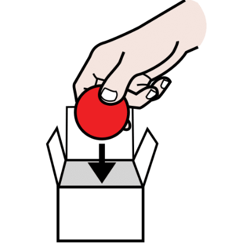
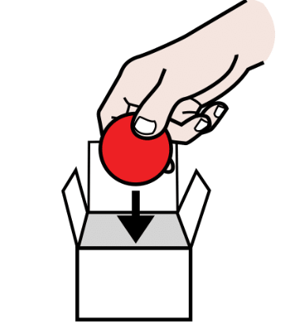

Diccionario
Incluir

Definición:
Poner una cosa en el interior de otra.
Ejemplo:
Deberíamos incluir a alguien nuevo en el equipo.

Definición:
Poner una cosa en el interior de otra.
Ejemplo:
Deberíamos incluir a alguien nuevo en el equipo.

Tras la fase de escribir, toca volver a revisar e incluir las mejoras que tus compañeros y compañeras han aportado a tu relato y a la presentación del mismo. Así podrás dejarlo listo para colgarlo en las redes de tu instituto.
Estamos, por tanto, en la tercera fase, la fase de reescribir.
Definición:
Poner una cosa en el interior de otra.
Ejemplo:
Deberíamos incluir a alguien nuevo en el equipo.

Tras la fase de escribir, toca revisar e incluir las mejoras que tus compañeros y compañeras han aportado a tu relato.
Así podrás mejorar tu relato y colgarlo en las redes sociales de tu instituto.
Estamos en la tercera fase: reescribir.
Ahora vas a ampliar tu boceto teniendo en cuenta las sugerencias que te ha hecho tu compañero o compañera y puedes añadir algunas mejoras:
1. De carácter voluntario:
2. Necesarias:
Repasamos la presentación, la ortografía y el sentido de la narración corta. Si todo va bien, avanzamos. Si no es así, no pasa nada, volvemos al punto anterior.
Definición:
Poner una cosa en el interior de otra.
Ejemplo:
Deberíamos incluir a alguien nuevo en el equipo.
Puedes añadir algunas mejoras:
Revisamos la presentación de nuestro relato y la ortografía.
También revisamos si nuestra historia tiene sentido.
Si todo va bien, avanzamos.
Si no es así, no pasa nada, volvemos a revisar.
Revisamos la opción elegida para presentar nuestro relato y hacemos mejoras.
Definición:
Poner una cosa en el interior de otra.
Ejemplo:
Deberíamos incluir a alguien nuevo en el equipo.
Sabes todo lo necesario para volver sobre tu producto final y darle los últimos retoques.
Estás demostrando que eres un verdadero o verdadera cuentista y que tu superpoder ya no se puede ocultar.
¡Ánimo! ¡Ya casi está!
¿Tienes que añadir alguna viñeta? ¿Te apetece poner una música de fondo para aumentar el suspense? ¿Quieres incluir una imagen en tu relato? ¿Has incluido créditos en tu vídeo? ¡Qué poco queda!
Vas a revisar y ampliar la viñeta gráfica de la fase anterior. Se trata de que amplíes el número de viñetas a las que te sean necesarias y que ordenes tu relato con los dibujos y los bocadillos necesarios para que se entienda tu historia.
Para orientarte, puedes seguir esta plantilla:
Plantilla para revisar el cómic
Recuerda que puedes descargar la ficha y rellenarla. No olvides guardarla cuando acabes. También puedes imprimirla y rellenarla a mano si quieres.
Si elegiste el podcast, comprueba que tu tono de voz es el adecuado y que pronuncias bien las palabras. Además, intenta darle una entonación a tu lectura en voz alta. Por último, respeta las distintas pausas del relato. Si quieres, añade música de fondo o efectos especiales. ¡Te quedará genial!
Te dejamos otra vez la herramienta para grabar. Recuerda guardar el audio cuando lo termines y enviárselo a tu profesor o profesora por el medio que te indique.
Te enseñamos a utilizar el programa Audacity con el siguiente tutorial. Puedes editar tu audio y mejorarlo. Pero, ¡recuerda!, cuando lo termines, guárdalo de nuevo con otro nombre y envíaselo a tu profe. Aquí te dejo unas sencillas instrucciones sobre la edición de audio: Instrucciones de Audacity

En el caso de que hayas decidido utilizar el formato escrito, debes revisar la redacción y división en párrafos del mismo. Además, recuerda seguir las instrucciones que te dimos en la fase de reescribir e incluir más ilustraciones en tu relato.
Ya sí es el momento de hacer la grabación de tu vídeo. Puedes incluir una música de acompañamiento de fondo acorde con la trama del relato o efectos especiales si te fuera necesario. Trabaja sobre las decisiones que tomaste en la fase de escribir y mejóralas o puedes modificarlas si así lo crees conveniente.
En esta opción eres tú quien debe decidir el nivel de dificultad que quieres añadir.
Una vez que hayáis acabado vuestros productos, os volveréis a reunir en los grupos de la fase anterior y cada persona compartirá su relato para realizar la evaluación.
Tras la evaluación subiremos nuestros relatos en el formato elegido a las RRSS (Redes sociales) del instituto con un comentario sobre lo que nos ha parecido esta tarea.
Es normal, a lo mejor no lo has hecho antes. Seguro que tras este vídeo te animas a hacerlo. Igual que te gusta ver vídeos de gente conocida, a tu entorno le gustará ver tu “superpoder”.
A algunas personas les resulta más fácil, o no se preocupan tanto.
Todas las personas tenemos superpoderes para resolver las actividades, pero cuando los unimos, aprendemos en equipo y somos capaces de resolver cualquier desafío.
Por ello es importante que en tu equipo sigáis estos consejos:
Ánimo, lo más difícil ya lo has logrado. Sigue los pasos poco a poco para ver tu resultado.
¡Bravo, cuentista!
En este último paso te voy a proponer que pienses en qué ha sido lo más importante de todo lo que has aprendido para conseguir el reto que te proponíamos.
Lo que descubras pensando en ello te servirá para cuando tengas que alcanzar retos parecidos en el futuro.
Para un momento y completa el PASO 4 de tu Diario de aprendizaje (¿Qué he aprendido?).
Recuerda:
¡Ánimo, que lo harás genial!
Obra publicada con Licencia Creative Commons Reconocimiento No comercial Compartir igual 4.0